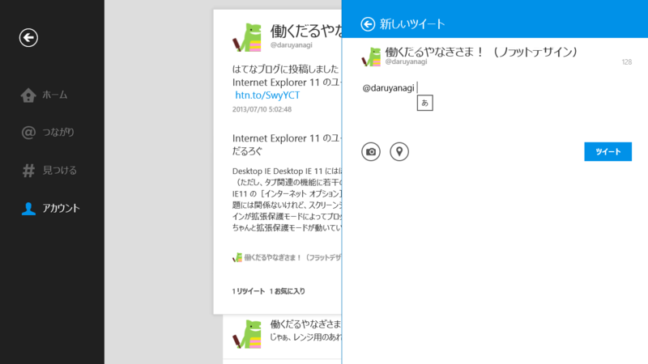
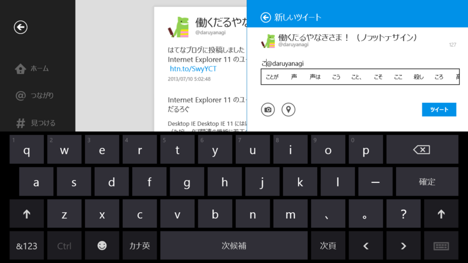

Windows 8.1 Preview の IME における既知の問題
執筆日時：

Windows 8.1 Preview の IME は挙動が少しおかしい。個人的に一番困るのが、Twitter アプリでリプライを書くときに、

キャレットの位置がなぜか先頭に移動してしまうこと。Windows 8.0 の Twitter アプリでは再現しない。
※ 一応フィードバックも投げておいた（http://answers.microsoft.com/ja-jp/windows/forum/windowsrt_1_pr-ime/twitter/0f9ac88d-00b1-4065-820e-83efe55151ea）
ほかにもいろいろあるっぽいなぁ、と思って調べてみたところ、今のところ以下のような既知の問題があるみたい。
● 注目文節および複数文節の表示
→ アプリが使用しているテキスト入力コンポーネントによって、未確定文字列の状態を示すアンダーライン等が表示されない場合があります。
● 候補ウィンドウの表示位置
→ アプリによって、候補ウィンドウが表示される位置が、本来とは違う位置に表示される場合があります。
● 予測、次候補予測、変換候補の品質
→ 予測 ・ 変換候補の辞書の品質は現在調整中であり、最終版では改善される予定です。
● 全体のパフォーマンスと安定性
→ パフォーマンスと安定性は現在調整中であり、最終版では改善される予定です。
● カラー絵文字サポート
→ 絵文字フォントがカラーをサポートしましたが、アプリによっては白黒表示になります。
● Windows RT デバイスの動作
→ Windows Update 経由の辞書のアップデートに失敗します。Windows 8.1 Preview および Windows RT 8.1 Preview の IME の制限事項を教えてください - マイクロソフト コミュニティ
あと、こんなのもあるみたい。
● 「Windows Liveメール」でメッセージを作成する際に IME が有効にならない
→ ［Ctrl］＋［Tab］キーで有効になる
● Desktop IE 11の TEXTAREA でキャレットがずれる
→ 製品版で修正予定
● ストアアプリで全角空白が入力できない
→ 製品版で修正予定
● ストアアプリで［半角/全角］キーによる入力モードの変更ができない
→ ［Alt］＋［半角/全角］キー、または［半角/全角］キーの二回押しで回避可能。製品版で修正予定
● 検索チャームやストアアプリでかな入力ができない
→ かな入力なにそれ（
基本的に製品版までは修正が入らないっぽいのだけど、すごく不安だなぁ。